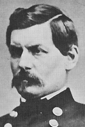

|

|

|
|
|
George Brinton McClellan, called "The Young Napoleon" during
the Civil War, was known more for his organizational skills
than his fighting ability or political talent. McClellan
was born to a wealthy and distinguished family in
Philadelphia, Pennsylvania. A brilliant student, McClellan
entered the U.S. Military Academy at West Point at the age
of 15, and graduated second in his class in 1846. Like many
of his classmates, McClellan served in the Mexican War,
where he earned promotion for courage on the battlefield. In
1857, McClellan resigned his commission to accept a position
as chief engineer and president of the Illinois Central
Railroad. In this capacity, he honed his considerable skills
as a businessman. He also became acquainted with his future
commander-in-chief, Abraham Lincoln, who was working as a
lawyer for the Illinois Central.
When the Civil War broke out, McClellan was appointed
commander of the Department of the Ohio. Now a major
general, he quickly won fame with a minor victory in West
Virginia, ten days before the Union defeat under General
Irvin McDowell at the First Battle of Bull Run. When Lincoln
looked for replacements for the bumbling McDowell, he turned
to McClellan, one of the rare heroes of the early War.
Shortly afterward, the handsome and charismatic thirty-five
year old was given command of the armies around Washington,
D.C. In November, McClellan replaced the elderly and ailing
Winfield Scott as general in chief of all of the Union
forces in the country. It seemed to the arrogant young
general that he was destined for greatness. "I can do it
all," he said. He wrote his wife: "All tell me that I am
held responsible for the fate of the nation, and that all
its resources shall be placed at my disposal." While that
was true enough, personality clashes, political blunders,
and bad generalship would soon dim McClellan's bright future
as the nation's "savior."
At first, McClellan vindicated Lincoln's appointment. In
the fall and winter of 1861 he disciplined, drilled, and
organized the Army of the Potomac, the main army of the
eastern theater. More than that, he instilled pride into
the men under his command. Washingtonians thrilled to the
parades and reviews that displayed the power of the United
States. "On to Richmond!" was the cry accompanying the
superbly executed marches of McClellan's devoted men. As
late summer turned to autumn, and autumn to winter, however,
McClellan was increasingly criticized for inaction. Press,
public, and politicians alike openly wondered if the Army of
the Potomac was ever going to leave Washington to attack the
Confederate army in northern Virginia. Congressional
investigations tarnished McClellan's reputation. A
frustrated Lincoln remarked that if McClellan did not intend
to use the army, he wanted to borrow it.
McClellan responded by attacking his critics. In the
process, he alienated many of his former supporters,
including the President, whom he derided as "the original
gorilla." Increasingly suspicious of his detractors,
McClellan cultivated friendly politicians and reporters. A
Democrat, he appointed many generals who shared his
political beliefs, including the idea that the war should
not be fought to end slavery. These actions angered many
Republicans in Congress, and created friction between
McClellan and Lincoln, particularly given the fact that the
longer the war went on, the more emancipation was considered
as a serious option.
McClellan defended his inaction, arguing that the enemy
was higher in number, and better prepared than his own, even
when confronted with incontrovertible evidence to the
contrary. He unwisely preferred to keep his strategic plans
a secret, and bitterly resented any political interference
with what he considered purely military matters. Some of
McClellan's modern biographers have even advanced the
argument that he was psychologically incapable of taking
decisive action.
McClellan finally presented a plan of invasion to
Lincoln, and it was a good one. He envisioned one huge
offensive movement to capture the Confederate capitol,
Richmond, by transporting the Army of the Potomac down the
Chesapeake Bay to the tip of the Virginia Peninsula. If
Richmond fell and the Confederate Army was decisively
defeated, the War would be over. Finally, in Spring of 1862,
after many months of prodding and pushing, McClellan's army
was on the move for the Peninsula Campaign. McClellan laid
siege against the vastly outnumbered Confederates at
Yorktown for a month. McClellan's unnecessary delay allowed
the Southern Army precious time to prepare the defense of
Richmond. As always, McClellan sincerely believed that he
was facing a more powerful and numerous army than his own.
He constantly asked Lincoln for more men and supplies,
prompting Lincoln's famous observation that, "sending
reinforcements to McClellan is like shoveling flies across a
barn."
McClellan slowly but surely advanced toward Richmond and
came within five miles of capturing the city. His forward
movement was permanently stopped when, after the battle of
Seven Pines (May 31-June 1, 1862), Robert E. Lee assumed
command of the Army of Northern Virginia. General Lee
launched a counterattack that drove the Army of the Potomac
back to the James River in the Seven Days' Battle (June25 -
July 1, 1862). Defeated but defiant, McClellan blamed his
loss on the politicians in Washington who refused him the
support he requested. Lincoln, disappointed by the
lackluster performance of his general, ordered him back to
northern Virginia to join with General John Pope's new army.
Lincoln also removed McClellan from his position as general
in chief, replacing him with Henry W. Halleck.
Unfortunately, Pope was far worse than McClellan, and
suffered one of the most humiliating defeats of the War at
the Battle of Second Bull Run (August 29-30, 1862). Lincoln
had no choice but to reappoint McClellan to rebuild the
shattered remnants of the Army of the Potomac, a task he
eagerly accepted.
Meanwhile, buoyed by his recent victories over the Union
Army, Robert E. Lee brought the War to the North when his
army entered Frederick, Maryland on September 4, 1862
prompting fears that an attack on Washington D.C. was near.
"Little Mac" slowly moved the Army of the Potomac into
position between Washington and the Confederates. The
audacious Lee then split his army in the face of a much
larger foe, and sent General Stonewall Jackson to capture
the Union garrison at Harpers Ferry, West Virginia. By
accident, a Union soldier found a copy of Lee's official
orders directing Jackson away from the main body of the Army
of Northern Virginia. This vital information was in
McClellan's hands within hours. "Here is a paper," exulted
McClellan, "with which if I cannot whip Bobbie Lee, I will
be willing to go home." Few commanding generals have
possessed such precise information about their opponents'
intentions, but McClellan did not strike quickly enough to
destroy portions of Lee's divided army. Another opportunity
to bring the War to an end was lost. Instead, the two armies
met on ground of Lee's choosing, just north of Sharpsburg,
Maryland.
On the morning of September 17th, the Federals attacked
the Confederates along Antietam Creek, which gave the battle
its name in the North. Critics then and now of McClellan's
generalship on the bloodiest one day battle in United States
history (23,000 casualties) claim that his plan was poorly
executed and that he failed to use the thousands of Union
troops who were held in reserve, thus minimizing the
Northern advantage in numbers. The battle was a tactical
draw. Nevertheless, General Lee's invasion failed, and the
Army of Northern Virginia retreated across the Potomac to
its Virginia camps. The North claimed Antietam as a victory,
and on September 22, 1862 Lincoln issued the preliminary
Emancipation Proclamation.
After the battle, Lincoln urged McClellan to fight
aggressively against Lee. Characteristically, McClellan felt
a new campaign would require many more men and more
supplies. Finally, in November of 1862, the President
relieved McClellan of his command and replaced him with
General Ambrose Burnside. After a tearful farewell to his
soldiers, McClellan moved to New York City, and never
commanded an army in the field again.
McClellan remained popular with his men, and for that
reason was an attractive candidate for the Democratic Party
in the 1864 presidential election. Although a strong
pro-Union man, McClellan was tainted by the peace wing of
his party, which advocated an end to the War through
negotiation. Lincoln was re-elected by a substantial margin,
including most of the soldiers' vote. After the War,
McClellan worked as the chief engineer of the New York City
Department of Docks (1870-1872) and later was elected
governor of New Jersey. Like many other Civil War generals,
McClellan published an autobiography, McClellan's Own
Story (1887), a strong defense of his war record. He
died in Orange, New York on October 29, 1885.
Source: Joan Waugh, ed., Facts on File Encyclopedia of American
History: Civil War and Reconstruction, 1856 to 1869 (New York: Facts on
File, 2003), 224-226.
|